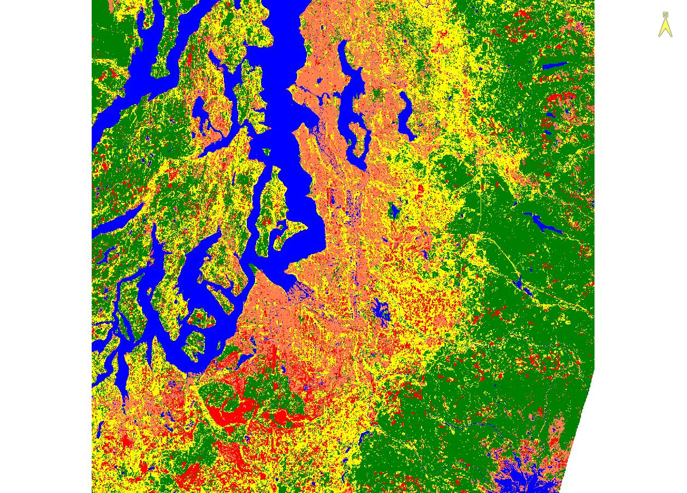

Land Cover Classification Analysis Comparison: Unsupervised & Supervised
Adam Day | April, 2025
PURPOSE
The purpose of this analysis was to visually compare the difference between both the Supervised and Unsupervised land cover classification methods. The results from this analysis highlight how two types of land cover classification methods can be used and how they differ. Unsupervised classification allows the sensing software to create classification types based on an internal algorithm which sorts each pixel into a unique class along with other similar pixels. It does not discriminate because land feature types because it does not interpret a green pixel as a tree, rather it’s just a green pixel and therefore goes into Class 1. The supervised classification type relies on a user input ‘training data’ which it uses to reference for the classification. Essentially, regions of interest created around like land cover features are grouped together based on their similarities between the pixel colors, which are delineated manually by the user rather than automatically by the software.
This analysis used both methods to create two different data sets shown below. Figure 1 shows a software driven; unsupervised classification of the image used. Table 1 highlights the values counted for this image in regard to pixels. Each pixel equates to an area on the ground of roughly 30m x 30m or 900m2. As a result, water equated to 13%, forest coverage was 18%, bare ground equated to 9%, agricultural ground measured 45% and developed land (residential & industrial) comprised of 14%.
Figure 2 shows the same satellite image, but using the user driven, supervised classification method. Table 2 shows how the values of each area differ from the unsupervised method. Water remained roughly equivalent at 14% total land cover, forest jumped to 37%, bare ground increased slightly to 10%, agricultural land was reduced to 25%, and developed land remain close to its counterpart at 15%.
FIGURES

Figure 1: Unsupervised Classification Method
Figure 2: Supervised Classification Method
| Class | Pixel Count | Precent | Area (Ha) | & of Total |
|---|---|---|---|---|
| Water | 3,900,835 | 12.9 | 351,075 | 13% |
| Forest | 5,421,721 | 17.9 | 487,955 | 18% |
| Bare Ground | 2,779,419 | 9.2 | 250,148 | 9% |
| Agricultural | 13,506,519 | 44.8 | 1,215,587 | 45% |
| Developed | 4,259,023 | 14.1 | 383,312 | 14% |
| Total | 2,688,077 |
Table 1: Unsupervised Classification Statistics
| Class | Pixel Count | Precent | Area (Ha) | & of Total |
|---|---|---|---|---|
| Water | 4,090,470 | 13.5 | 368,142 | 4% |
| Forest | 10,954,062 | 36.3 | 985,866 | 37% |
| Bare Ground | 2,857,370 | 9.4 | 257,163 | 10% |
| Agricultural | 7,598,038 | 25.2 | 683,823 | 25% |
| Developed | 4,366,643 | 14.4 | 392,998 | 15% |
| Total | 2,687,992 |
Table 2: Supervised Classification Statistics
DISCUSSION
As shown in the analysis above, both classification methods are similar in approach, but have different sets of pros and cons. Water, bare ground, and developed land appeared to remain the most similar between the two datasets, which is understandable as those features are generally easy to view from satellite image. Major variations are found between the two classification methods, namely involving the forest and agricultural land cover types. In the unsupervised approach, it appears the software might have difficulty in delineating between trees, grasses, or shrubs. As a result, it seems to heavily favor grouping these colors together without delineating between the subtle variances between the colors. However, to the human eye, who likely has seen or is accustomed to seeing these landcover types both in person and imaging software, might be able to pick up the subtle variances and delineate between them better, which may explain the differences between the outcomes from this analysis.
As a result, supervised classification is likely better suited for an analysis where accuracy is a vital component. However, the drawback to using the supervised classification approach would be time in manually delineating each feature, deciding which features could be grouped together into a single group, and error in incorrectly classifying landcover features due to misinterpretation of the image. An unsupervised approach is likely best suited for large scale classification projects with a short time. Having a software automate the approach certainly saves time and effort with a decent amount of accuracy, but the main drawback being sacrificing accuracy as the software might be limited in delineating between similar landcover features.